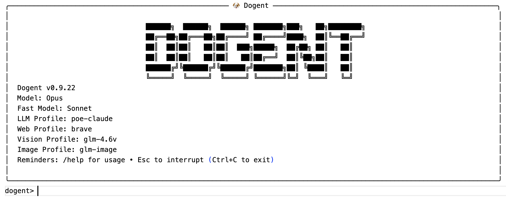

Dogent 的诞生：从 Vibe Coding 到 Vibe Writing

作为一名顾问，我经常需要撰写各种技术文档。这个过程中自然少不了借助 AI 来辅助调研、润色、排版与校对。
然而，AI 协助的专业文档写作有其独特的挑战：需要精心设计的提示词，需要让 AI 参考给定的知识，遵循指定的文档模板，还需要反复迭代和调优。这些工作如果使用在线 LLM 助手，往往需要反复粘贴提示词、上传文件，效率很低；而使用本地 Agent 助手（如 Claude Code 或 Codex）则会发现另一个问题：这些专注 Coding 的 Agent，其交互设计并不适合写作，输出技术文档也充满了 "AI 味道": 过于结构化的短句、泛滥的项目符号列表、缺乏叙事张力的表达……
这首先源于系统提示词的错配。编码 Agent 的系统提示词是专门为编程场景设计的。看看 Codex 的源码 中的系统提示词就知道，它强调的是代码风格一致性、工具使用规范、Git 操作安全这些工程化约束。这种设计导致生成的文本天然带有 "Coding 风格"：喜欢用列表、偏好结构化输出、优选 mermaid 风格的图表、追求明确性而非可读性 —— 浓浓的 "AI 味道" 就是这么来的。
而专业写作需要的是另一套东西：叙事的连贯性、读者导向的表达、符合特定文体的语气。技术博客需要轻松易懂，设计文档需要严谨详实，技术报告需要权威可信。这些要求，绝不是在 prompt 里加一句 "请写得生动一点" 就能解决的。
Coding Agent 的另一个问题在于，其交互方式与写作场景脱节。写作和编码有着本质不同的工作节奏：写作时往往需要在 CLI 中进行多行输入；确认大纲结构时需要能在终端里直接调出编辑器进行可视化修改；不仅要能引用文件，还要能够指定文档模板……更重要的是，写作过程不像编码那样具有清晰的编译和测试 "反馈信号" 可以一定程度自循环，而写作缺乏清晰的自校验反馈信号，需要人持续参与校对，因此也需要更匹配的人机协同交互方式。
此外，专业写作需要一套特定的工具链：直接读取和生成 PDF、DOCX、XLSX 文件，分析图表，进行网络调研（Claude Code 的 Web Search 在国内用不了），定制 PDF 生成样式……这些能力需要内置到 Agent 之中，才能让写作流程顺畅高效。
正是基于这些原因，Dogent（一个专注于协助写作的 AI Agent）的想法诞生了：与其继续调教一个 "Coding Agent" 去写文档，不如构建一个 "写作优先" 的专业 Agent。
为了能够 "一鱼两吃"，我决定完全用 Vibe Coding 的方式来开发 Dogent。这样既能产出一个实用的写作工具，也方便我顺便做一系列实验，验证当下最先进的 AI Coding Agent 的代码能力，检验各种 AI 辅助软件开发实践的实际功效：包括 AI 辅助原型设计、Spec 驱动开发、可观测性设计、面向 Context 的设计与重构、AI 时代的架构原则……
因此，Dogent 是一个完全用 Vibe Coding 方式 "攒" 出来的工具。整个开发过程使用 Codex CLI 配合 GPT-5.2 High 模型，我几乎没有手写过一行代码。
技术选型的两个决策点
Dogent 的开发过程涉及两个关键的技术选型决策，它们背后的考量值得展开说说。
第一个决策：为什么用 Codex 做 Vibe Coding？
整个 Dogent 是用 Codex CLI 配合 GPT-5.2 High 模型，以完全 Vibe Coding 的方式开发的。选择 Codex 的原因很直接：具备精准的人机协作分寸感，"干脆利落"，从不 "拖泥带水"，配合 GPT-5.2 High 这个模型，实现意图的还原度与协作体验俱佳。
第二个决策：为什么 Dogent 本身要基于 Claude Agent SDK 开发，而不是直接用 Codex SDK？
这个选择背后的主要原因是 Claude Agent SDK 的可开发性更好。Codex 虽然开源，源码完全可以看，端到端体验不错，但它的 SDK 编程接口和用户文档都还比较初期。相比之下，Claude Agent SDK 官方提供的 API 和文档非常丰富和完善，可配置性很强，能满足开发一个动态 Agent 的各种定制需求。
由此可见，端到端的工具（比如 Codex 作为用户直接使用的编码助手）选型的重点在于使用体验；而可开发 SDK（比如用来构建其他 Agent 的 SDK）选型的重点是 "可开发性"，两者的评价标准截然不同。
这里也印证了一个可开发性原则：对 "可开发性软件" 来说，"可协作的契约" over "代码开源"。一个开源项目把所有代码都公开了，并不意味着其他开发者就能基于它高效地构建东西。真正重要的是：有没有设计良好的功能完备的 API？有没有清晰和丰富的文档？接口设计是否稳定？这些 "契约" 层面的东西，比源码本身更决定一个 SDK 的可开发性。
吃自己狗粮的开发过程
Dogent 的开发过程本身是一个有趣的闭环实验，基本是我利用工作的碎片化时间，采用 "吃自己狗粮" 的方式进行的。
我经常同时打开两个终端窗口：一边用 Dogent 撰写技术文档，同时后台让 Codex 开发 Dogent 的新功能。写文档时发现哪里不好用，就切到 Codex 加功能；功能开发好了，回到 Dogent 继续写文档测试新功能。
这种 "吃自己狗粮" 的模式有几个好处。
首先，需求永远是真实的。不是想象中用户可能需要什么，而是我自己此刻确实需要什么。这避免了很多过度设计。
其次，反馈循环极短。发现问题到解决问题可能就几分钟的事情，不需要等到下个版本。
最后，验收标准很明确：能不能让我更顺畅地完成当前的文档撰写？
当然，这种模式也有它的局限。我一个人的需求终究是片面的，做出来的工具可能过度拟合我的使用习惯。但对于一个服务于自己和几个同事的长尾工具来说，这个问题并不严重。
Dogent 能做什么
基于前文所述，通过持续的 "吃自己的狗粮"，Dogent 逐步演化出了一套适合我这样的软件工程师的写作习惯的功能集。
定制的系统提示词与写作最佳实践：Dogent 的系统提示词是专门为长文档撰写设计的，强调叙事连贯、风格一致、逻辑递进。它会尽量避免编码 Agent 那种碎片化的输出习惯。
文档模板体系：支持三层模板结构 —— 内置模板（随包发布的基础框架）、全局模板（用户自定义的跨项目复用模板）、工作区模板（项目特定的深度定制）。使用时可以通过 @@template_name 临时指定输出模板，也可以在项目配置中设置默认模板。
终端写作体验：CLI 交互中集成了即时 Markdown 编辑器，按 Ctrl+E 调出多行编辑器，按 Ctrl+P 进行 Markdown 即时预览。支持 Esc 中断当前任务、快捷键和命令补全。这个场景满足了软件工程师习惯以 CLI 作为界面的特点，又缓解了 CLI 下不适合跨行 markdown 编辑和 review 的痛点（适合快速编辑和预览篇幅不长的多行文本或者 markdown，更长的还是适合 UI 编辑器）。
多格式文档处理：通过 @file 引用本地文件作为上下文，支持 PDF、DOCX、XLSX、纯文本等格式。Excel 可以通过 #Sheet 指定工作表。输出方面支持 Markdown 到 DOCX 的转换、Markdown 到 PDF 的导出，PDF 样式可以通过 CSS 模板定制。
视觉内容理解与生成：通过配置视觉模型 profile，支持图片和视频的内容分析，也可以基于文本提示生成配图。
Lessons 经验沉淀：当 Agent 执行失败或者用户主动中断任务时，可以记录经验教训。后续任务会自动带上相关的 lessons，避免重复犯错。这其实是把 "人对 AI 的纠错反馈" 从一次性的对话，变成了可持续复用的结构化资产。
项目状态文件化：history、memory、lessons 都持久化存储在 .dogent/ 目录下。可以通过 /show 查看、/archive 归档、/clean 清理。这让长周期的写作项目可以随时中断和恢复。
可配置的搜索服务：针对国内 Claude Code 的 Web Search 不可用的问题，支持用户配置 Google CSE、Bing、Brave 等第三方搜索服务。
Claude 生态兼容：可以复用 Claude Code 的 commands、plugins、skills，共享 CLaude Code 生态。例如对于 PPT 生成，目前缺乏系统性的 "完美解决方案"，用户可以直接安装 Claude Code 现成的 PPTX skill 作为过渡。
坦白说，这些功能单独拿出来都不复杂。但把它们整合成一个针对写作场景优化过的完整体验，对我这个特定用户来说，确实比直接用 Claude Code 舒服很多。
两个维度的收获
通过 Vibe Coding 的方式开发 Dogent，让我获得了两个维度的经验和思考。
第一个维度是关于如何设计和开发一个动态 Agent。这包括：对于动态 Agent 来说 Prompt 工程的要点是什么、如何管理好复杂的上下文、如何让 Agent 从错误中学习持续改进、如何提高 Agent 的容错性避免 LLM 的指令遵从问题。这些内容我会在后续的文章中展开。
第二个维度是关于 Vibe Coding 本身的方法论思考。当完全依赖 AI 来写代码时，什么时候需要引入 Spec，价值到底有多大？可观测性设计与架构解耦的优先级是什么？人的角色从 "代码编写者" 转变为 "需求澄清者" 和 "架构监督者" 后，复杂度转移到了哪里？AI 友好的软件架构的原则是什么？这些问题在 Dogent 的开发过程中做了一些针对性的验证，也会在后续的文章中专门展开。
这两类经验互相交织。开发 Agent 的过程验证了 Vibe Coding 的可行边界；Vibe Coding 的实践又反过来影响了 Agent 的设计思路。
关于这几篇博客
在 AI Coding 时代，工具软件的开发成本正在急剧下降，一个周末就能攒出一个功能完备的小工具。这意味着 "长尾工具" 会大量涌现 —— 这些工具可能只服务于几个人，解决一个非常具体的问题，但正因为足够具体，所以用起来顺手。
Dogent 正是如此，它算基于 Claude Agent SDK 之上的 "套壳" 工具，开发门槛不高，价值也很朴素（主要就是服务我自己，以及周围几个有类似写作需求的同事），因此工具本身没有太多值得书写的。
然而，开发 Dogent 的过程则印证了一个越来越明确的趋势：在 AI Coding 时代，软件的开发门槛正在急剧降低，"随手可得" 正在成为常态。真正稀缺的不再是代码本身，而是能够洞察需求、融入业务上下文的创意和判断力。
当 AI 越来越能干，人的要求会更 "细致"，体验会更 "挑剔"，选择会更偏向 "品味" 与 "体验"。这是一种进步：技术可以更快地对齐目标。而我们终于可以稍稍告慰自己：人是目的，不是过程，也不是工具。
所以，AI 时代很多关键问题，靠 "生成" 解决不了，必须靠 "判断" 解决。而判断力来自长期积累：见过、做过、踩过坑，有审美，懂平衡，并持续的审视与反思。这几篇博客正是对此的记录，希望能对读者有所启发。